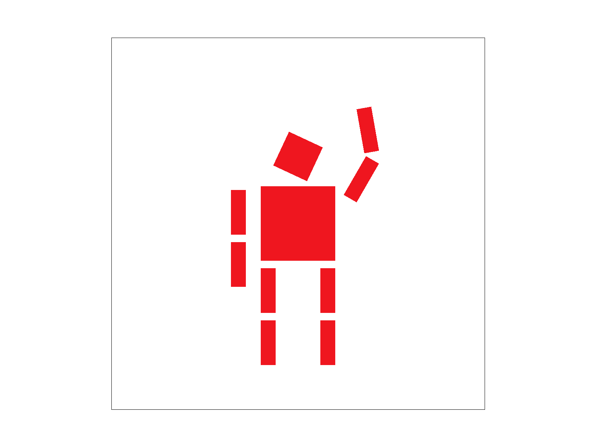

Overview
In this project we implemented various parts of the rasterization pipeline including rasterization, transforms, and texture mapping. This allowed us to display various images and examine how different methods impact the look of the image in terms of aliasing. The most interesting things for me were clearly seeing the antialiasing effects of supersampling and better understanding mipmaps and level sampling by actually writing out the code myself.
Part 1
First we check if the given points are in counterclockwise order using a determinant test. If they aren't, we swap the first two points to force CCW order. Then we loop from the minimum to maximum x and from the minimum to maximum y. For each of these points (+0.5 to x and y to get to the center of the pixel), we check if it's in the triangle using the point-in-triangle test. If all 3 line tests pass, we fill the pixel.
This algorithm checks every pixel in the bounding box of the triangle exactly once.

Part 2
We first change sample_buffer to be a flattened 3D array instead of a flattened 2D array (indexed into by z * width * height + y * width + x). This means sample_buffer's size is multiplied by sample_rate. When rasterizing the triangle we use this 3rd dimension to store sample_rate values per pixel corresponding to the sample_rate samples inside each pixel. In resolve_to_framebuffer we can then average all colors for a single pixel by averaging across z for the same x and y.
Supersampling is useful for antialiasing. We now store many more values when rasterizing the triangles and we have to downsample afterwards. Supersampling allows us to remove high frequencies and "blur" the triangles, which helps antialias the triangles.
In order: 1, 4, and 16 samples per pixel

With a very skinny triangle the frequency of change is very high, so whether we get color or not with a rate of 1 per pixel is pretty random. This leads to the gap we see in the first picture. As we remove high frequencies by averaging colors, the triangle blurs and the pieces of the triangle join together.
Part 3
Cubeman is waving.

Part 4
Barycentric coordinates are essentially weights on the 3 vertices of a triangle. When we look at any point inside the triangle we can express its position as a weighted sum of the 3 vertices, where being closer to a vertex increases the weight of the vertex. Because barycentric coordinates express how close a point is to each vertex, it helps with interpolating colors as we do in this image. As a point gets further from a vertex the color contribution from that vertex (and the barycentric value for that vertex) goes down and the contributions of the other vertices goes up.


Part 5
Pixel sampling is used when we have a texture that we want to map onto our screen. Because (x, y) screen space doesn't perfectly map onto integer (u, v) texture space, we approximate the texture values using sampling. Nearest is just taking the integer (u, v) that is closest while bilinear uses linear interpolation to take a weighted average across the 4 nearest points.
I first used barycentric coordinates to calculate the floating point (u, v) for point (x, y) based on the triangle coordinates. For the nearest method, I then rounded to the nearest integer (u, v) and used the color at that point. For the bilinear method, I applied the linear interpolation formulas to take a weighted average of the 4 nearest points.
In order: nearest + 1, bilinear + 1, nearest + 16, bilinear + 16
Here we can clearly see the differences between the methods. For both the 1 sample per pixel and 16 sample per pixel pictures, nearest has noticeably more contrast (darker and lighter regions) while bilinear lessens this contrast and blends the colors together a bit. There will be a large difference when the texture has high frequency change because nearest would result in a somewhat random color compared to bilinear taking an average.
Part 6
Level sampling is used when different parts of the texture are at different levels or depths from the camera. Closer areas can be in higher resolution while further areas should be downsampled to prevent aliasing.
We first calculate the barycentric coordinates for (x, y), (x + 1, y), and (x, y + 1). This gives us the difference vectors that we can plug into the formula to calculate L, the level of the pixel. Given the level, we get the corresponding color from that level of the mipmap. For the nearest method we just round the level whereas for the linear method we get the color for both the closest levels D and D + 1. We then linearly interpolate across these two levels for the color.
Inreasing number of samples per pixel reduces speed and increases memory usage because of the need to store more values and downsample. Using bilinear pixel sampling reduces speed because we need to interpolate 4 values instead of just using 1. Level sampling also reduces speed and increases memory usage because we need to store the mipmap to track different levels and calculate the appropriate levels. Increasing samples per pixel seems to be very costly and also not as effective. Bilinear pixel sampling seems to be both effective and relatively cheaper. Level sampling seems to be costly but effective.
In order: zero + nearest, zero + linear, nearest + nearest, nearest + linear
website link: https://cal-cs184-student.github.io/sp22-project-webpages-huangshawn1/